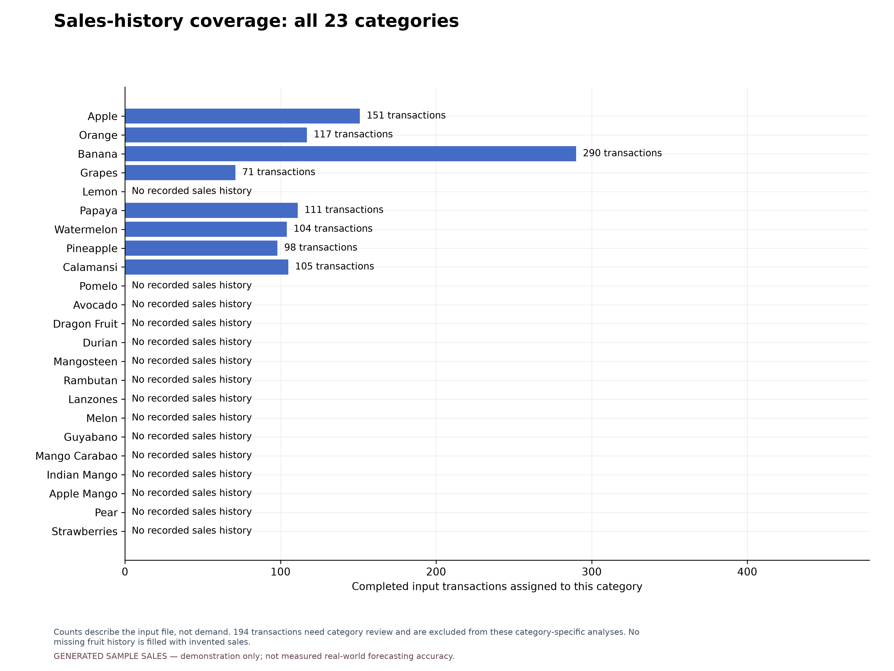

FruityVens: sales analysis and forecast evaluation
GENERATED SAMPLE SALES — demonstration only; not measured real-world forecasting accuracy.
1,047 completed transactions · 8 fruits ·
2026-07-01 to 2026-10-08
8 of 23 supported categories have usable history.
194 of 1241 input transactions need category review.
They are excluded from the graphs and model scores below; their original labels are preserved.
Later test period: 2026-09-11 to 2026-10-08, evaluated in
4 successive 7-day forecast blocks. Selected policy chooses
a method for each fruit before each block using earlier sales. Lower errors are better.
Download all figures (PDF) · Prediction data (CSV) ·
Methodology and interpretation · Run metadata
Selection and training are repeated using earlier history before each later block.
The learning curve is a separate one-day-ahead diagnostic. Generated sales cannot establish real vendor accuracy.Does the forecast help sales planning?
Compare daily errors, 7-day total errors, and performance against the recent average.
Positive improvement means smaller daily errors than the average. Tolerance checks need limits chosen with the vendor.
Daily tolerance: Not assessed; period tolerance:
Not assessed; target share within tolerance:
Not assessed.
Expected sales must be compared with usable stock and delivery timing before buying.
Forecast under- or overestimation does not measure actual spoilage or lost sales.
Vendor assessment CSV · Period error CSV ·
Methods chosen before each forecast
Sales-history coverage: all 23 categories

Counts describe the input file, not demand. 194 transactions need category review and are excluded from these category-specific analyses. No missing fruit history is filled with invented sales.
Download figure PDF
Daily sales and revenue

Completed sales assigned to supported categories only; 194 unresolved/out-of-scope transactions are excluded. Weight and revenue are separate measures; the trailing average summarizes past sales.
Download figure PDF
Sales trends: all 23 supported categories

Each available line is a seven-day trailing average of classified sales. Empty panels mean no recorded history, not zero demand. Generic Mango records cannot be assigned to a variety without confirmation. Panels have separate kg scales.
Download figure PDF
Distribution of sales quantities

Left: daily fruit sales, including assumed zero-sale dates. Right: basket weights from individual transactions.
Download figure PDF
Average sales by day of week

Summary of classified sales in the available period. For the bundled sample, higher weekend transaction counts were deliberately programmed; this is not evidence of real vendor weekday demand.
Download figure PDF
Forecast errors on later test periods

All methods predict the same fruit-days over 7-day blocks. Selected policy chooses a method per fruit using earlier sales only. Scores use unrounded predictions.
Download figure PDF
Actual versus predicted sales by fruit

Dotted boundaries mark new 7-day forecast blocks. Selection and training use only earlier sales; actual sales within a block never become forecast inputs. Reference actuals are sample values when the dataset is generated.
Download figure PDF
Training and validation MAE versus boosting rounds

One-day-ahead diagnostic: validation features use earlier observed sales. This is not the recursive seven-day test score; the final test period is excluded entirely.
Download figure PDF
Selected procedure: agreement and error distribution

Only category-resolved fruit-days with evaluated predictions are shown. A point near the diagonal indicates close agreement; positive error means overforecasting. Sample reference quantities are generated when the input is synthetic.
Download figure PDF
Actual and predicted 7-day sales totals

Totals are calculated separately for each fruit and forecast block. Good agreement here can hide errors in daily timing; read alongside the daily plots. These are sales quantities, not recommended purchase quantities.
Download figure PDF
Selected forecasting policy: errors by fruit

All supported categories are listed. Missing bars mean not evaluated; they do not represent zero error. Compare kg errors with sales volume and the vendor's tolerance before judging usefulness.
Download figure PDF
Forecast error by distance into the future

Compare requested days on the same test blocks. Weekly-spaced origins start on the same weekday, so this plot mixes forecast-distance and weekday effects. It does not isolate the causal effect of predicting further ahead. A bridge precedes requested day 1.
Download figure PDF